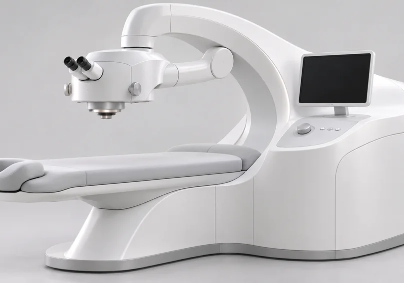
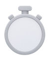
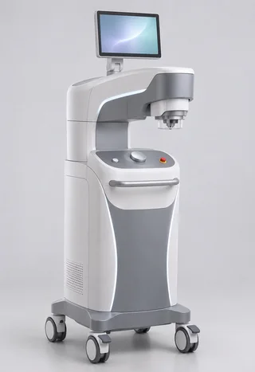
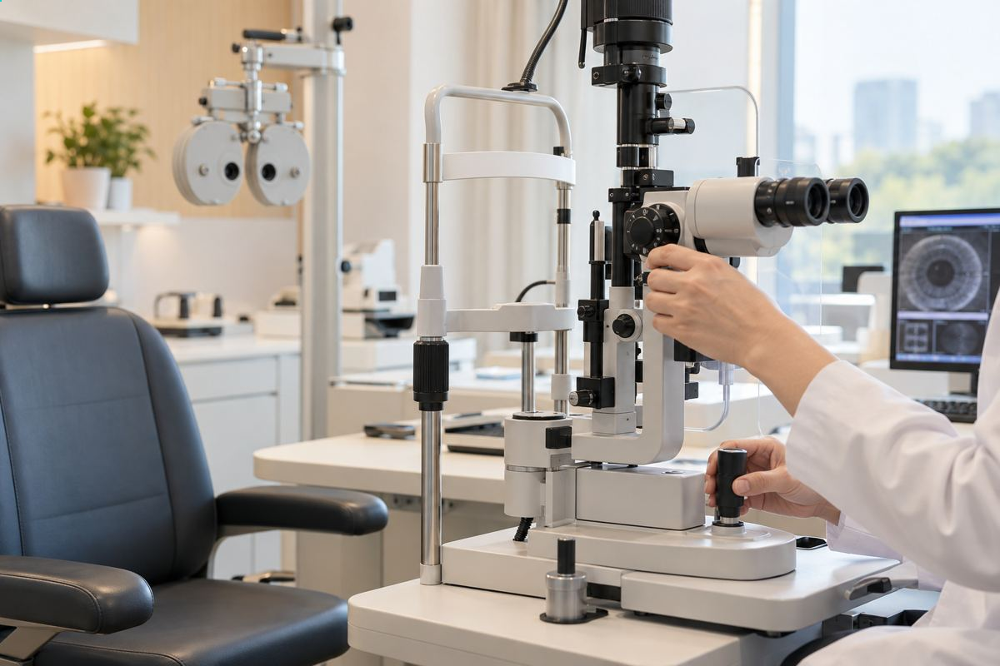

수술센터
4050 LASIK·LASEK 4050 LASIK·LASEK 4050 LASIK·LASEK
나이가 들어서, 노안이 찾아와서
잘 안보이는게 당연하다? NO
선명한 세상을 다시 보고 느낄 수 있도록
4050 노안 라식 · 라섹이란?
주시안은 원거리를 편하게 보도록
비주시안은 근거리를 편하게 보도록레이저로 시력을 교정합니다.
주시안은 원거리를 편하게 보도록 비주시안은 근거리를 편하게 보도록 레이저로 시력을 교정합니다.
노안 라식라섹 수술 후 비교
서울시원안과의
4050 노안 라식 · 라섹은
4050 LASEK LASIK

VISUAL FIELD TESTING서울시원안과의
4050 노안 라식 · 라섹은
-
기존 라식 · 라섹 방식으로 각막 절편을 만들거나
각막 상피를 벗기는 등 눈 상태에 맞춰
각막 모양을 정교하고 정확하게 교정합니다.
이를 통해 근거리와 원거리 모두의
시력 향상을 기대할 수 있습니다. -
주시안은 정시로 교정해 먼 곳을 잘 보게 하고,
비주시안은 근시를 조금 남겨 가까운 곳을
잘 보게 하는 수술을 모노비전이라고 합니다.
서울시원안과는 이 모노비전 방식에 새로운
기술을 더해 중간 거리 시력까지 높였습니다.
40 · 50 노안 라식 · 라섹의
수술 방법
- 스마일라식
- 라식
- 라섹
40 · 50 노안 라식 · 라섹
장점
-
01
선명한 시력
안경, 돋보기를 사용하지 않고도
선명한 시력을 유지할 수 있습니다. -

02빠른 회복
수술 과정이 간단하고 빠른 회복으로
일상 복귀의 부담이 줄어들었습니다. -
03
검증된 레이저 수술
검증을 마친 레이저 장비 사용으로
정밀하고 안전한 수술이 가능합니다.
40 · 50 노안 라식 · 라섹
추천 대상자Recommend
-
40대 전 · 후
초기 노안이 온 경우전자기기를 자주 쓰고 가까운 작업이 많은 요즘,
스트레스 등으로 비교적 이른 나이에도
노안이 찾아오는 경우가 잦습니다.4050 노안 라식 · 라섹은 이런 분들이 선명한
시야를 되찾도록 돕습니다. -
원래 근시를
가지고 있는 경우어린 시절 근시가 있으면 먼 곳이 흐릴 수 있습니다.
노안이 진행하면 가까운 곳을 보는 데에도
불편을 느낄 수 있습니다.4050 노안 라식 · 라섹은 이런 분들이
다초점 렌즈를 끼지 않아도 가까운 곳과 먼 곳을
모두 잘 보도록 돕습니다. -
라식·라섹이 가능할
정도로 각막이 충분한 경우노안 교정은 각막 모양을 바꾸는 방법을 포함할 수 있습니다.
굴절 이상을 교정하는 방법 가운데 하나입니다.그래서 각막 두께가 충분해야 수술할 수 있습니다.
잔여각막량이 부족하면 부작용 발생의
우려가 있기 때문입니다.
수술장비
펨토초 레이저 장비
노벨 물리학상을 받은 펨토초 레이저 기술과
국내외에서 허가받은 펨토초 레이저 장비
VISX 레이저
각막 절삭량을 줄여 남는 각막을 많이 지킬 수 있는
대표적인 엑시머 레이저 장비입니다.
각막이 얇은 분, 고도근시 · 고도난시인 분도 각막확장증
같은 부작용 걱정을 덜고 수술을 받을 수 있습니다.
 VISX
S4 IR
VISX
S4 IR
Z4 레이저
스위스 Ziemer社에서 출시된
펨토 레이저 Z4 올레이저 수술 장비

z4 RAZER수차 분석 기반 교정
기존 수차 분석보다 5배 정교한 맞춤형 라식의
차세대 방식으로 더 정교하고 또렷한 시력 교정이
가능한 아이디자인

I design검사로 수술의 완성도를 높입니다.
대학병원급 장비를 활용한
75가지 안 정밀검사
-
대학병원급
1
의료장비 및 검진 시스템 보유 -
연구하는 의료진,
2
국가공인 검안사를 통한
전문 검진 -
평균 21년 이상 안과전문의
3
크로스 체크 -
연령대별 세분화된
4
검진 프로그램 -
안질환 관련 외래 진료 및
5
치료 가능 -
아벨리노 각막이영양증
6
[유니버셜] 검사